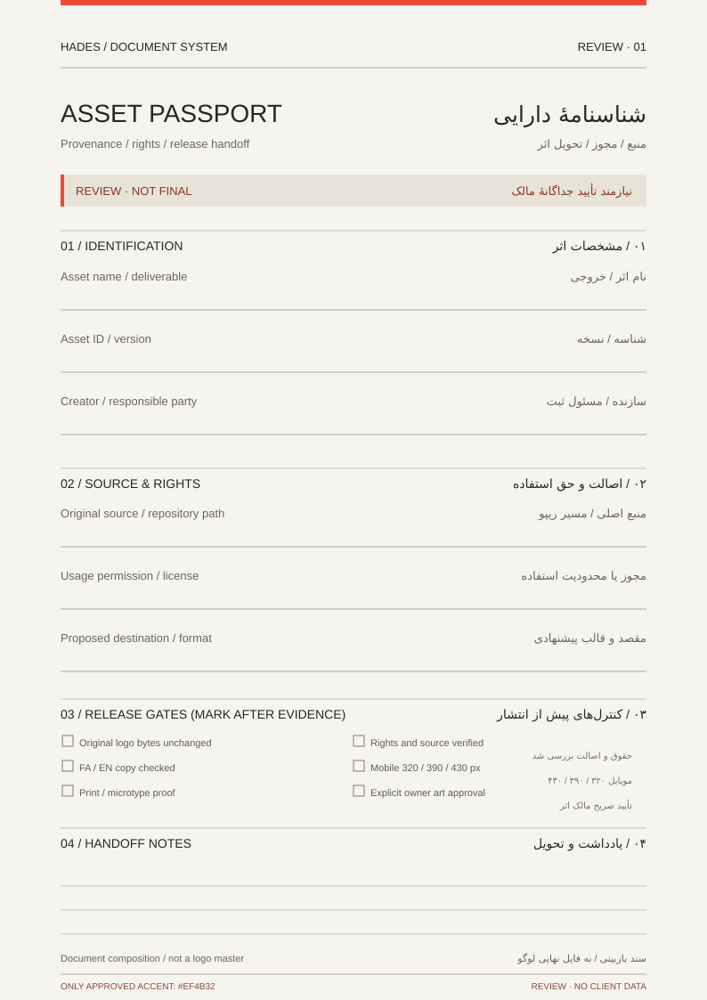

Editable source / فایل قابلویرایش
210×297 mm · vector text and rules · Classic/Modern-compatible minimalist architecture · sRGB vermilion accent #EF4B32. The working neutral palette and Tahoma/Arial fallback remain proposals.

کاربرد
برای هر فایل برند، نام اثر، منبع اصلی، وضعیت مجوز، کنترل زبان، موبایل، چاپ و تأیید مالک را جداگانه ثبت کنید. هیچ خانهای از پیش تأیید نشده است؛ پرکردن فرم مجوز انتشار صادر نمیکند.
Do not modify the four owner originals, claim FINAL approval, assume product-brand rights, or treat this SVG composition as a vector master for any HADES mark.
OPEN: physical paper proof, true licensed Mikhak render, native-device microtype and owner approval. Pattern01 may appear publicly as REVIEW; Pattern02 private; Pattern03 stopped.